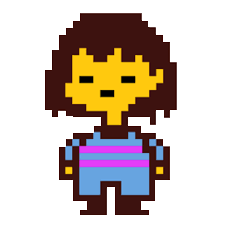
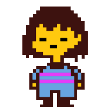

My favorite character: Papyrus
My favorite hobby: Drawing
Hello! I am the creator of the webpage. I draw (digitally and traditionally), and I do coding.
About
Hello human! I am the creator of this webpage! If you were wondering, my hobbies are coding, drawing, and gaming. My favorite character is Papyrus from the great game Undertale. Drawing helps me put my ideas on paper. Coding lets me make webpages and games based on my ideas. Gaming is a way of entertainment that I enjoy.
Charater Review

This is my review of Papyrus from Undertale because he is my favorite character in the game. If you don't know, Papyrus is the younger brother of Sans the Skeleton. Papyrus is my favorite character because he has a great personality, he is kind, and he just wants friends. Some flaws Papyrus has are being kinda egotistical. But Papyrus is mostly a lovable cinnamon roll.
Here is a page on the Undertale Wiki about Papyrus
Papyrus | Undertale Wiki | Fandom
My Inspiration
 
